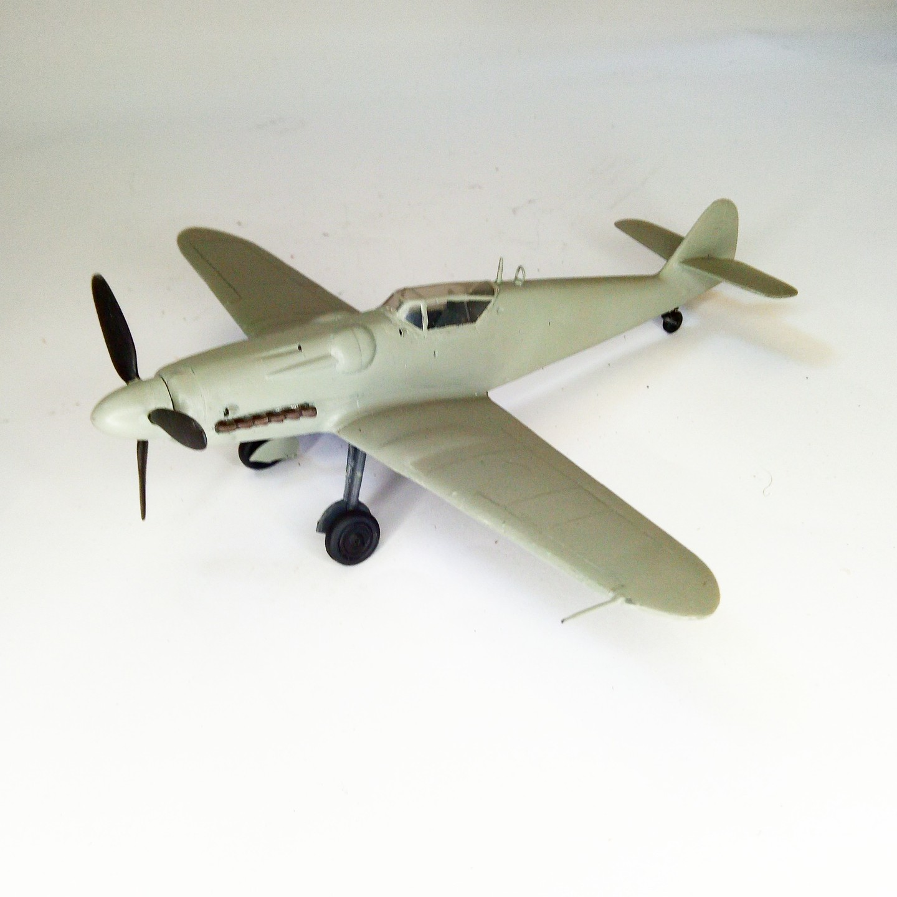

Aerei · scale model archive
Avia S-199
Avia S-199 — Kit: Ventura, Scale: 1/48. Last development of the Me 109 with Junkers Jumo 211F engine. Pre delivery to IAF. Short run plastic kit #1/48…

Photo gallery
English description
Last development of the Me 109 with Junkers Jumo 211F engine. Pre delivery to IAF. Short run plastic kit
#1/48 #Ventura
Descrizione italiana
Ultimo sviluppo del Me 109 con motore Junkers Jumo 211F. Prima della consegna alla IAF. Kit in plastica short-run.